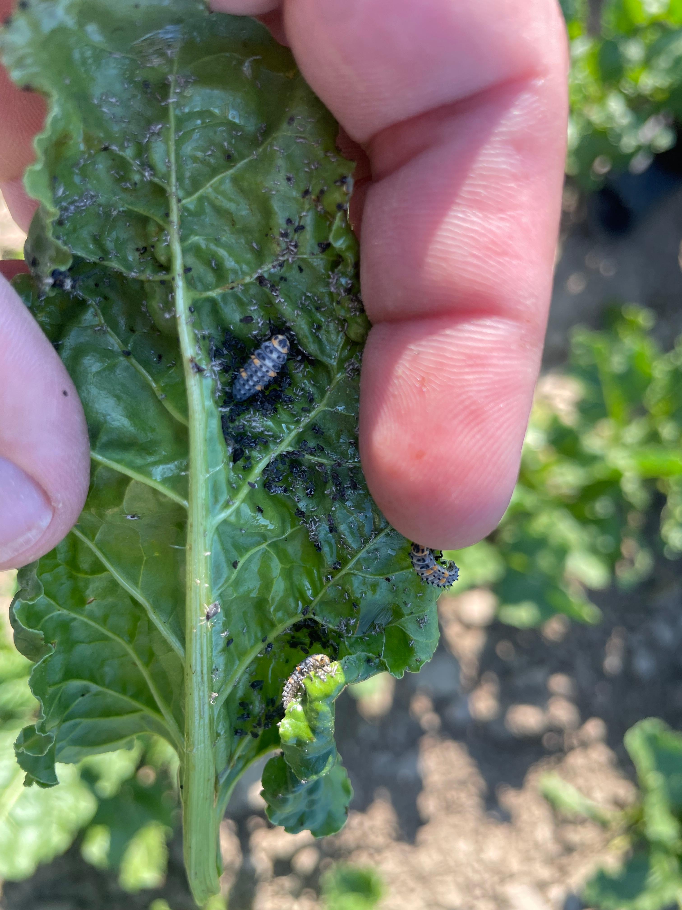
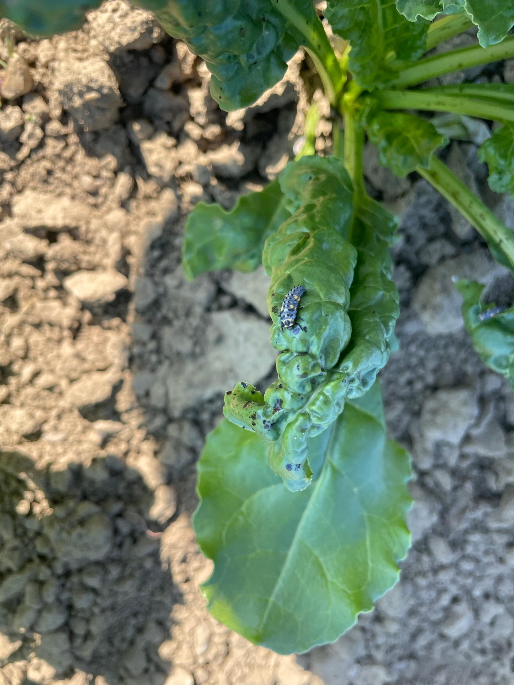
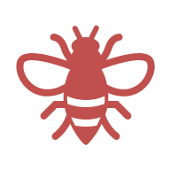
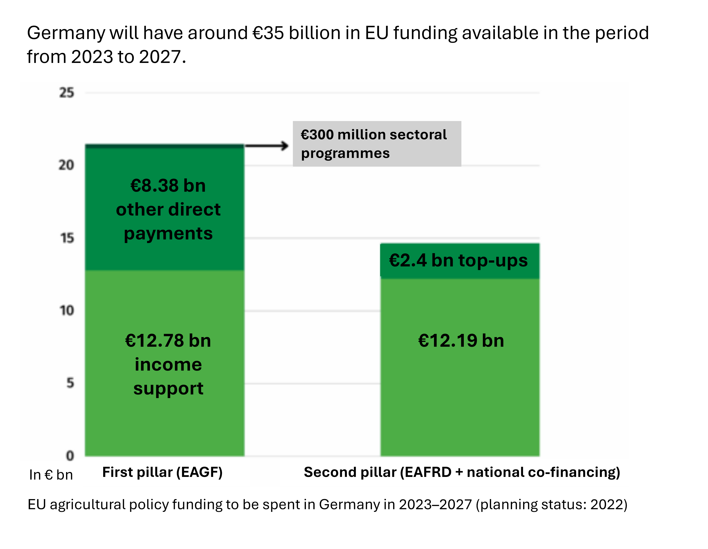
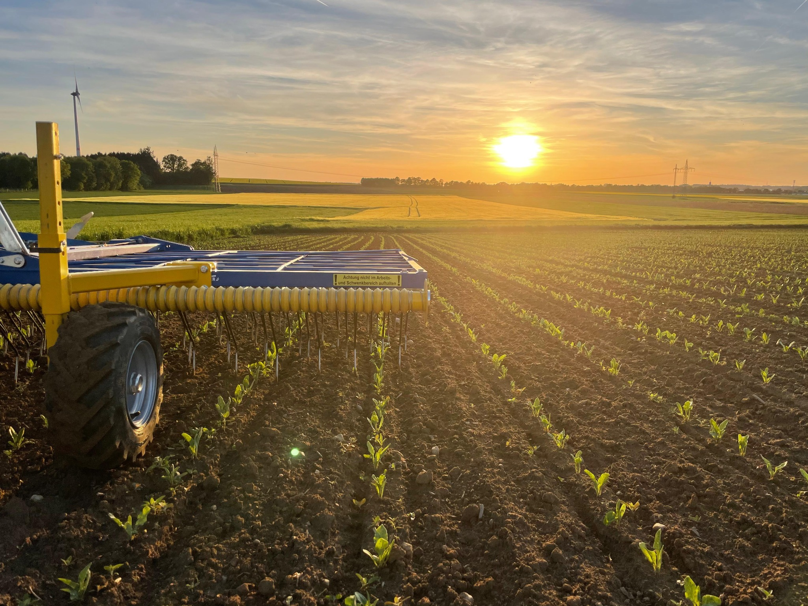

Subject: Germany targets 30% organic area by
2030, but is currently around 11.5%
(2024).
Research question: Which reasons are there why
Germany will not achieve its 30% Organic Farming target by 2030??
Germany’s organic area has grown for years — yet it remains far below
political targets. In 2024, organic farming covered ~1.9 million
ha and ~11.5% of Germany’s agricultural area;
the share of organic farms was ~14.1% (35,881 farms)
and even fell slightly compared to 2023. This website explains why: the
incentives, governance, markets, and power structures that shape
farmers’ decisions and the speed of transformation.1
30% target vs 11.5% (2024) + 1.9 million ha (2024).
Structural data on organic farming show that organically farmed land
in Germany has been growing steadily. In 2024, organic farming covered a
total of 1.9 million hectares. Since 2010, this area
has almost doubled. The share of organic farmland in total agricultural
land is also increasing, reaching 11.5% in 2024.
Compared with 2023, both the number of organic farms and their share
of all farms declined slightly. In 2024, 35,881 farms,
or 14.1% of all farms, were operating organically.8
Regional differences in organic farming in
Germany
Organic farming varies widely across Germany. In states such
as Baden-Württemberg, Brandenburg, Saarland, Hesse, and
Mecklenburg-Western Pomerania, the share of organic farmland is
above the national average. In Lower Saxony, North
Rhine-Westphalia, Saxony, and Schleswig-Holstein, it is much
lower. These contrasts show that organic farming cannot be expanded
everywhere in the same way.13
State-by-state differences
• Schleswig-Holstein: Strong potential for
vegetables, milk, and beef, but wet maritime conditions make organic
winter crops more difficult.
• Lower Saxony: High sales of organic products, but
relatively little organic land; strengths include dairy, potatoes,
vegetables, and poultry.
• Mecklenburg-Western Pomerania: Limited organic
farming in coastal grain areas; stronger in eggs and beef
production.
• Brandenburg: Dry, low-fertility soils and
proximity to Berlin support a high share of organic land, with potential
in dairy, eggs, potatoes, and vegetables.
• North Rhine-Westphalia: Organic farming is limited
in intensive farming regions, but regional vegetable marketing and
grassland-based dairy and beef perform well.
• Hesse: A relatively high organic share is mainly
linked to extensive permanent grassland in upland areas.
• Rhineland-Palatinate: High organic shares in
extensive grassland regions, while wine and vegetable production create
strong value on smaller areas.
• Thuringia: Organic arable farming can be
competitive in dry areas, but livestock and processing are limited.
• Saxony: Highly diverse conditions support a mix of
dairy, irrigated vegetables, and direct marketing near cities.
• Bavaria: Organic farming is shaped by dairy in the
Alpine foreland, arable farming, and specialist crops such as soy,
maize, and sunflowers.
• Baden-Württemberg: Organic farming is especially
important in orchard meadows, alongside dairy, meat, arable farming,
fruit, vegetables, and wine.14
Page
4: Importance of Agriculture and Environmental Impacts of Agriculture in
Germany
Agriculture forms the foundation of the global food system and is
essential for ensuring food security and human survival. Agricultural
production systems supply the majority of food consumed worldwide and
therefore play a central role in providing calories and nutrients to the
global population. Agriculture represents the primary source of global
food supply and is fundamental to achieving food security and nutrition
goals.15
Feeding a growing global population sustainably is one of the 21st
century’s biggest challenges. Global agriculture currently produces too
many grains, fats, and sugars, but not enough fruits, vegetables, and
protein to meet healthy dietary needs. Shifting both production and
consumption toward more fruits, vegetables, and plant-based proteins
would be the most effective way to support human health while reducing
land pressure, greenhouse gas emissions, and habitat loss.16
Agriculture is vital to food security, livelihoods, and global
sustainability. Yet with population and food demand rising sharply,
feeding the world without increasing environmental damage is one of the
century’s biggest challenges. Agriculture already uses nearly half of
the world’s vegetated land, generates a quarter of global greenhouse gas
emissions, and still fails to feed everyone adequately.17
In 2023, around half of Germany’s land area — 16.6 million hectares —
was used for agriculture. Most of this land is arable farmland, while
just over a quarter is permanent grassland. Nearly 60% is used to grow
animal feed, and another 16% is used for energy crops and industrial raw
materials, leaving only the remainder for direct food production.
Because farming operates in open landscapes, it has a major impact on
soil, water, air, and biodiversity. Intensive agriculture can lead to
soil compaction, erosion, declining soil fertility, nitrate pollution,
eutrophication of rivers and seas, biodiversity loss, and greenhouse gas
emissions. In 2022, agriculture accounted for 7.4% of Germany’s total
greenhouse gas emissions (excluding emissions from agricultural land use
and land-use change, as well as emissions from mineral fertilizer
production).19
In 2024, around32.2 million tonnes were delivered
to dairies in Germany. Across the EU, annual production reached
around 146.2 million tonnes.20
The societal costs of German agriculture amount to at least
€100 billion annually.21
Societal benefits of organic farming include environmental advantages
such as water protection, soil fertility, biodiversity, climate
mitigation, climate adaptation, resource efficiency, and animal welfare.
On average, organic management reduced nitrogen losses by 28%, improved
soil fertility in more than half of all comparisons, and delivered
strong benefits for biodiversity — especially for plant life. It also
showed positive results for climate protection, climate resilience, and
resource efficiency, including higher carbon content, better soil
structure, and more efficient use of nitrogen and energy.24
Organic farming reduces emissions, improves energy
efficiency, and lowers environmental costs. Because it avoids
synthetic mineral nitrogen fertilisers, it is more climate-friendly and
resource-efficient than conventional farming. Expanding organic farmland
could generate major societal savings — from €1.5 billion
today to as much as €4 billion if Germany
reaches its 30% organic farming target by 2030.25
Benefits for human health:
A growing number of studies indicate that organic plant-based foods
contain higher levels of vitamins, minerals, trace elements, and
beneficial secondary plant compounds. Organic fruit and vegetables also
generally contain less nitrate and fewer pesticide residues.
For animal-based products, species-appropriate husbandry, feed, and
access to pasture play a decisive role in quality. As a result, organic
milk and meat typically have a more favourable fatty acid composition.26
Organic production is a sustainable farming system based on the
following core principles:

Respect for natural systems and cycles
Organic farming works in harmony with nature and aims to protect and
improve soil, water, air, plant health, animal health, and the balance
between them.
Protection of natural landscapes
It supports the preservation of natural landscape features and valuable
natural heritage.
Responsible use of energy and natural
resources
Resources such as water, soil, organic matter, and air must be used
carefully and responsibly.
Production of high-quality food
Organic farming is designed to deliver a wide range of high-quality
agricultural and aquaculture products that meet consumer demand without
harming the environment, human health, plant health, animal health, or
animal welfare.
Integrity across the full supply chain
The integrity of organic production must be ensured at every stage of
production, processing, and distribution of food and feed.
Use of ecological processes and natural
methods
Organic production relies on biological processes and ecological
systems, including:
i. the use of living organisms and mechanical production methods;
ii. soil-based crop production, land-related livestock farming, and
aquaculture based on the sustainable use of aquatic resources;
iii. no use of GMOs or products made from or by GMOs, except veterinary
medicinal products;
iv. risk assessments and, where necessary, precautionary and preventive
measures.
Restriction of external inputs
External inputs should be kept to a minimum. Where needed, they are
limited to:
i. inputs from organic production, with priority given to plant
varieties suited to the specific needs and goals of organic
farming;
ii. natural or naturally derived substances;
iii. low-solubility mineral fertilisers.
Adaptation to local conditions
Production methods may be adapted where necessary to reflect health
status, regional ecological balance, climate, local conditions, stages
of development, and specific livestock practices.
Prohibition of certain technologies
Organic production excludes animal cloning, the breeding of artificially
produced polyploid animals, and the use of ionising radiation throughout
the entire organic food chain.
High animal welfare standards
Organic farming must ensure a high level of animal welfare while
respecting species-specific needs.28
Key EU Rules for Organic
Farming
Crop production
Conversion period required for farms entering organic
production
Soil fertility must be maintained and improved
Special soil management practices
Multi-year crop rotations
Fertilisers and plant protection products only if approved on
positive lists
Use of organically produced seeds and planting material
Livestock farming
Conversion rules for farms and animals from non-organic
origin
Land-based livestock farming
Feed must be organically produced
Only a few strictly regulated exceptions
Animal health supported through appropriate husbandry
Focus on natural resistance and species-appropriate care
Regular inspections
Traceability and proof of origin for organic meat29
Key Differences: Conventional vs. Organic defined in Regulation
2018/848:
Category
Conventional Agriculture
Organic Agriculture
Legal framework
Farmers must comply with general EU legislation.
Farmers must comply with organic rules in EU Regulation
2018/848.
Synthetic fertilizers
Mineral fertilizers permitted
Fertility must be maintained through crop rotation, legumes, manure,
etc.
Pesticides
Specific approved synthetic fertilizers allowed.
Synthetic pesticides prohibited, except for a limited list of
approved substances.
Genetically modified organisms
GM crops allowed in principle under EU GMO procedures.
Use of GMOs strictly prohibited.
Crop rotation
Not strictly required.
Mandatory crop rotation required to maintain soil fertility and
control pests.
Livestock
Animal welfare standards defined by EU directives; indoor housing
widely allowed.
Stricter animal welfare rules, including outdoor access, lower
stocking densities, and organic feed.
Feed requirements
Conventional and imported feed allowed.
Livestock must be fed 100% organic feed.
Antibiotics
Veterinary medicines permitted.
Preventive antibiotics use prohibited.
Inspections
No mandatory certification system.
Mandatory certification and annual inspection by control
bodies.
Organic products in the EU can be identified by the EU
organic logo. This label may only be used for products that
comply with the EU Organic Regulation 2018/848.
The
EU Organic Label is defined in Regulation 2018/848, Article 33: The EU
organic production logo may be used in the labelling, presentation, and
advertising of products that meet the requirements of the
regulation.
Organic Associations in
Germany
In addition to the EU organic label, a number of organic farming
associations in Germany apply their own standards and certification
schemes:
Biokreis
Originating from a consumer initiative in Passau, Biokreis is mainly
active in Bavaria, North Rhine-Westphalia, and central Germany. It was
the first association in Germany to introduce standards for hotels and
restaurants, pet food, and organic leather.
Bioland
Bioland is the largest organic association in Germany, both in number of
farms and managed area. Its foundation is especially committed to soil
protection and biodiversity. Since 2016, Bioland and Gäa have cooperated
under aligned standards and certification systems.
Biopark
Biopark includes many large-scale farms, with an average farm size of
216 hectares. Many of its member farms operate in protected natural and
landscape areas.
Biocyclic Vegan Farming
This is a plant-based form of organic farming that excludes all
commercial livestock farming and all animal-derived inputs. It places
special emphasis on biodiversity, healthy soils, closed nutrient cycles,
and humus building.
Demeter
Demeter is the oldest organic association in Germany. Its biodynamic
farming approach is based on the ideas of Rudolf Steiner and is
considered a particularly sustainable form of circular
agriculture.
Ecoland
Ecoland promotes ecological and fair agriculture, both regionally and
globally. The association focuses on preserving cultural landscapes,
protecting the environment, and safeguarding natural resources through
adapted organic farming.
Ecovin
Ecovin specialises in organic viticulture. Around one quarter of
Germany’s organic vineyard area is organised under Ecovin, with member
wineries in all major wine-growing regions.
Gäa
Gäa is one of the smaller German organic associations, with most of its
members based in eastern Germany. Since 2016, it has cooperated closely
with Bioland while remaining an independent organisation.
Naturland
Naturland is the second-largest organic farming association in Germany
and is active internationally. With its Naturland
Fair certification, it combines organic farming and fair trade
in one label.
Verbund Ökohöfe
This association is mainly active in eastern Germany. Its member farms
are larger than the national average for organic farms, reflecting the
traditionally larger farm structures in that region.32
At a Glance
Look for the EU organic logo
Check for additional labels from German organic
associations
Good to know: These associations often apply standards
beyond EU requirements
Page
9: Why is progress stagnating despite the positive impacts and the
political goal — or stated ambition — of reaching 30%?
History? 🡪 and the structural factors resulting from it
?
Policy?
Lobbying?
Demand?
Research and Education?
In the following, each of these dimensions will be examined.
History
1924
Beginning of organic farming
Organic farming emerged as a response to the growing use of
chemicals, reviving traditional cultivation methods and focusing on
soil, animals, manure, and working with nature34.
1957
Foundations of the Common Agricultural Policy
(CAP)
The six founding states of the European Economic Community laid the
foundations of a common European agricultural policy in the Treaties of
Rome.35
1962
CAP comes into force
The Common Agricultural Policy officially began with the cereal
market organisation, based on three principles: a single market,
community preference, and financial solidarity36.
1967
Guaranteed grain prices
Minimum prices for grain were introduced, requiring the state to buy
grain of a certain quality at a fixed price. This was intended to
stabilize farm incomes and secure agricultural production37.
1988
Rural development support
introduced
Reform of the structural funds created support for rural development,
including infrastructure, human resources, forestry, and environmental
protection.38
1989
First EU support for organic
farming
Organic agriculture was supported by the EU for the first time,
making it a stronger economic alternative and triggering a second wave
of conversion to organic production.39.
1990s
Reunification and contrasting farm structures in
East and West Germany
After German reunification, major regional differences in farm
structure became even more visible. In eastern Germany, many former
collectivized farms were privatized but remained very large. Farms in
southern and western Germany stayed much smaller, often due to
historical patterns of land division.40,
41
1992
MacSharry Reform
The GATT (=General Agreement on Tariffs and Trade) negotiations
helped trigger the 1992 MacSharry reform, because price support created
trade distortions, so the EU had to move to budgeted direct payments
that were more compatible with these international trade rules.42 Support prices for cereals and beef
were reduced, direct payments were introduced, and environmental
measures such as extensification and afforestation gained importance.43
1999
Agenda 2000
Agenda 2000 continued this reform path. Support prices were cut
further — by 15% for cereals, 20% for beef, and for the first time 15%
for milk – while direct payments were increased. A new element
was voluntary environmental conditionality, allowing member states to
link direct payments to compliance with environmental standards. The
most important change, however, was the expansion of accompanying
measures and the transformation of agricultural structural policy into
the much broader “rural development” policy, which became the second
pillar of the Common Agricultural Policy (CAP) 44
2003
Decoupling of direct payments
With the 2003 reform, EU direct payments were separated from
production. Farmers gained more flexibility, while full payments became
conditional on meeting a range of standards in areas such as
environmental protection, animal welfare, food safety, and land
management requirements through the system of cross-compliance. 45
2013
Greening reform
The CAP became more market-oriented while strengthening environmental
requirements. Farmers had to meet additional “greening” requirements,
such as protecting permanent grassland, diversifying crops, and
providing ecological focus areas.46
2023
New CAP begins
Because negotiations at EU level were not completed in time, the
previous rules remained in place during the two transitional years 2021
and 2022. The new CAP entered into force on 1 January 2023. Key elements
of the reform include the introduction of a new CAP delivery model,
based on national strategic plans and a stronger focus on measurable
results. A redesigned green architecture is intended to give greater
financial and policy weight to environmental and climate objectives by
combining different instruments, including eco-schemes, conditionality
requirements, and agri-environment-climate measures.47
Organic Farming in Germany has grown steadily over the past decade.
By 2024, it accounted for 11.5% of agricultural land. However, growth
has been uneven and strong structural differences remain:
Permanent Grassland
Organic farming is especially common on permanent grassland. Around
20% of permanent grassland was managed organically in 2023, compared
with a much lower share across agriculture overall. Lower rental prices
and the continued link between livestock and land use help explain this
pattern.
Arable Farming
Arable land remains the biggest challenge for organic expansion.Only
7.4% of arable land was farmed organically in 2023, even though arable
farming makes up more than 70% of Germany’s agricultural area.
Regional Structures
Regional farm structures strongly influence conversion potential.
Highly specialized farming systems often make the transition to organic
more difficult. This applies both to areas with high livestock density
and to purely arable regions with little or no animal husbandry.
Product Groups with Higher Organic Shares
Some sectors already show comparatively strong organic shares:
Fresh eggs: around 14 % - Speech bubble Helmut Steber: “The egg
is regulated by the market”
Fruit: around 20 % of cultivated area
Vegetables: around 13 %
Wine: around 10 %
In these sectors, growth is driven less by area payments and more by
market demand and functioning supply chains.
Product Groups with Low Organic Shares
Organic shares remain very low in many standard agricultural
products:
Rapeseed: under 1 %
Pork: 1 %
Sugar beet: under 2 %
Cereals: 3 %
Milk (north-western and eastern Germany): 2 %
Mixed Farming Systems
Organic farming has traditionally been based on mixed systems that
combine crop production and livestock. These structures are becoming
increasingly rare. In Lower Saxony, for example, only around 1% of farms
converting to organic farming still followed this model.
Green Deal: The European Green Deal is the European Union’s
overarching strategy to achieve a climate-neutral and sustainable
economy by 2050. It brings together a wide range of sectoral policies
across areas such as energy, transport, industry, and agriculture.52
For agriculture, three policy instruments are particularly
relevant:
Farm-to-Fork-Strategy: The aim is to create a more
sustainable food system with lower enviornmental impacts and fairer
incomes for farmers. It is a central part of the Green Deal and is
intended to make to entire food chain – from production to consumption –
more sustainable.53
Common Agricultural Policy (CAP): The CAP ist he
EU’s main financial instrument for agriculture and rural development and
is intended to contribute more strongly to achieving the Green Deal’s
environmental and climate goals.54
Biodiversity-Strategy 2030: This strategy aims
to protect biodiversity and restore degraded ecosystems, including
through more biodiversity-friendly farming practices55
„Kulturlandschaftsprogramm“: Since 1988, Bavaria has
provided farmers with compensation payments for voluntary
environmentally friendly farming practices through the
„Kulturlandschaftsprogramm.“ The program is divided into measures for
grassland, arable land, and special areas. It is complemented by
additional agri-enviornmental-climate and animal welfare measures.56
„Moorbauernprogramm“: With payments fort he
conversion of arable land into permanent grassland, the first building
block of the „Moorbauernprogramm“ was introduced in 2023. Since 2024,
three additional measures have been available, including support for wet
use of grassland areas and the cultivation of paludiculture crops.57
„Vertragsnaturschutzprogramm“: The
„Vertragsnaturschutzprogramm" is intended to maintain and improve the
long-term functioning of natural ecosystems, while preserving the
habitats and communities of native animal and plant species.
The compensatory allowance is granted, for reasons of
nature conservation and landscape management, to support environmentally
sensitive and sustainable agricultural and forestry management on
legally protected biotope areas.58
“BayProTier”: Is a Bavarian Animal welfare
programme: In Bavaria, two measures are available: summer
grazing for cattle and BayProTier. The „Bayerisches Programm Tierwohl“
provides support by compensating ongoing costs associated with higher
animal welfare standards – for example, additional labour or bedding
costs – in pig farming and, since 2023, also in the rearing and
fattening of cattle.59
„Förderung des Ökolandbaus”: Organic farming: In
line with the state goal of managing 30% of Bavaria’s land organically
by 2030, organic farming will continue to receive support by allowing
for a range of possible combinations with measures under the
„Kulturlandschaftsprogramm.“ Funding supports the management of the
entire farm in accordance with the principles of organic farming.
Increased support is provided during the first two years of
conversion.60
“GAK”: The Joint Task for the Improvement of Agricultural Structures
and Coastal Protection (GAK) is Germany’s most important national
funding instrument for supporting agriculture and forestry, promoting
rural development, and strengthening coastal and flood protection. The
basis for the federal government’s financial participation is the GAK
framework plan; however, the specific design of the funding measures is
determined by the federal states, which establish their own funding
guidelines according to regional needs. An important component of the
GAK is also the promotion of organic farming: within the framework of
the GAK, the federal government supports both the introduction and the
maintenance of organic farming, thereby helping sustainably managed
farms during the conversion to and continuation of organic production.61
Farm to Fork Strategy
The EU Farm to Fork Strategy aims to make the food system work better
for consumers, producers, the climate, and the environment. European
food is already a global standard for being safe, nutritious, and high
quality. The next step is to make it the global standard for
sustainability.62
Why Action Is Needed
Around20% of food produced is wasted, while more
than half of the adult population is overweight,
contributing to a high prevalence of diet-related diseases, including
various types of cancer, and rising healthcare costs.
Agriculture accounts for 10.3% of EU greenhouse gas
emissions, and nearly 70%of these
emissions come from the animal sector.
EU agriculture has reduced greenhouse gas emissions by 20% since 1990,
but progress has not been linear or uniform across member states. Food
manufacturing, processing, retail, packaging, and transport also
contribute significantly to air, soil, and water
pollution, greenhouse gas emissions,
andbiodiversity loss.63
The EU Biodiversity Strategy aims to protect biodiversity and restore
degraded ecosystems by 2030. It is closely linked tot he Farm to Fork
Strategy and the Common Agricultural Policy.

Agriculture Impacts on Biodiversity
Farmers are key stewards of land in the EU. They are among the first
to experience the effects of biodiversity loss, but also among the first
to benefit from restoration. Biodiversity supports the production of
safe, sustainable, nutritious, and affordable food and helps secure farm
incomes and rural livelihoods. Simultaneously, conventional farming
practices are a major driver of biodiversity loss. The Biodiversity
Strategy therefore focuses on supporting a shift to more sustainable
farming systems.
2030 Commitments
Significant areas of degraded and carbon-rich ecosystems are tob
e restored, habitats and species are to show no further deterioration in
conservation trends or status, and at least 30% of these habitats and
species are to reach a favourable conservation status or at least show a
positive trend.
Reverse the decline of pollinators
Cut the use and risk of chemical pesticides by 50%,
including more hazardous pesticides.
Ensure at 10% of agricultural land consists of
high-diversity landscape features

Germany currently implements only around 4% instead of the 10% target. 51
Ensure at least 25% of agricultural land is farmed
organically and increase the use of agroecological
practices
Plant 3 billion trees
Make significant porgress in restoring contaminated
soils
Restore 25,000km of rivers to a free-flowing state
Reduce by 50% the number of Red List species threatened by
invasive alien species.
Cut nutrient losses by 50%, which will lead to a
reduction of fertilizer use by at least 20%
Require cities with over 20,000 inhabitants to develop urban
greening plans
Ban chemical pesticides in sensitive areas such as urban green
spaces
Reduce damage to sensitive marine species and habitats, including
from fishing and seabed activities
Eliminate or reduce by-catch to levels that allow species to
recover
Agriculture is especially prominent in the strategy: 5 of the 14
targets relate directly to farming.
Organic Farming in the Biodiversity Strategy
Organic Farming shows strong potential for both farmers and
consumers: the sector provides 10-20% more jobs per hectare than
conventional farming, attracts young farmers, and produces agricultural
goods with higher added value. To unlock this potential, at least 25% of
EU agricultural land should be farmed organically by 2030.
The European Action Plan for organic farming and organic food helps
member states stimulate both supply and demand, strengthen consumer
trust through promotion campaigns and green public procurement, and
improve the registration and market access of organic, traditional, and
locally adapted seed varieties.
Common Agricultural Policy (CAP)
The CAP is the EU‘s multi-billion-euro funding framework for
agriculture and rural development. The current funding period runs from
2023 to 2027. For the budget cycle, €387 billion was allocated to the
CAP, which combines direct payments with rural development funding.67
Structure
The CAP is structured as two pillars. The first pillar is financed
through the European Agricultural Guarantee Fund and contains direct
payments and eco-schemes. The second pillar, funded through the European
Agricultural Fund for Rural Development, supports rural development and
includes organic farming and other agri-environment-climate measures.68
Sectoral Programmes
In addition to direct payments and rural development, the CAP also
funds sectoral interventions for fruit and vegetables, apiculture, wine,
and hops.69
CAP Strategy Plans
Under the current CAP 2023-2027, each member state works out a CAP
Strategy Plan that combines support for income, rural development, and
market measures. These plans are approved by the European Commission.70
Since 1 January 2023, the CAP has operated under a new delivery
model. The EU now sets the common objectives, broad intervention types,
and basic requirements, while member states have more responsibility and
flexibility to design measures around their own national and regional
needs. These decisions are brought together in the CAP Strategy Plan,
which combines measures from both pillars and sets out the operational
objectives for the respective programme area. The model shifts the CAP
from a rather compliance-based system to a rather performance-based one,
with stronger monitoring of results.72
Sprechblase Helmut Steber – Gut Eichethof: „The CAP 2023-2027 has
neither improved nor worsened the situation.“
Organic Action Plan
The EU Organic Action Plan supports the goal of having 25% of
agricultural land farmed organically by 2030. Because the share of
organic farmland still differs widely across member states – from just
0.5% to more than 25% - each country is called on to develop ist own
national organic strategy.
Member states are asked to take the EU recommendations into account
when preparing their CAP Strategic Plans. They should carry out a
comprehensive analysis oft he organic sector, define measures,
incentives, clear deadlines, and national targets and explain how they
intend to contribute to the EU-wide 2030 objective. Each country has to
set ist own national target for the share of organic land by 2030 and
build sufficient capacity to implement ist national action plan
successfully.77
Germany’s „“Bio-Strategie“ is the national implementation of the EU
Organic Action Plan and sets out the priorities, action areas, and
measures across the entire value chain.
For the 2023–2027 funding period, the CAP Strategic Plan provides
around €2.6 billion to support the conversion to and maintenance of
organic farming. This funding is financed through the European
Agricultural Fund for Rural Development, national co-financing,
especially through the “Gemeinschaftsaufgabe Verbesserung der
Agrarstruktur und des Küstenschutzes“ (GAK) and additional national
funds. Averaged across the funding period, this amounts to
around €520 million per year for area-based support for
organic farming.
Federal Framework, State-Level Delivery
The federal states are responsible for designing the support
measures. As a result, funding premiums, eligibility criteria, and
obligations can vary from one state to another. The national government
contributes financially through the GAK. Within this framework, the
federal government and the states have set concrete amounts per land use
type, year, and hectare for area-based support for organic farming. At
the same time, the states retain room to adapt their funding guidelines
to their own conditions and priorities.
In addition to area-based support, the states also fund Organic Model
Regions (Öko-Modellregionen, also known
as Bio-Musterregionen or Bio-Regio-Modellregionen).
These are funded cooperations that connect organic and regional
production and bring together actors from across the value chain.
Action Areas and Measures of the German
„Bio-Strategie“
Action Area 1: Input Markets
Measure 1: Support plant breeding and animal breeding for organic
farming
Measure 2: Further develop input markets for organic farming and the
organic value chain
Measure 3: Develop digital tools for improved data and farm
management
Action Area 2: Production
Measure 4: Unlock the yield potential of organic crop
production
Measure 5: Strengthen legumes as a foundation of organic farming
systems
Measure 6: Promote the potential of organic grassland management
Measure 7: Strengthen organic livestock farming and feeding
Measure 8: Further develop, strengthen, and make animal welfare in
organic farming more transparent
Measure 9: Further develop region- and site-specific conversion
concepts
Measure 10: Promote biological and genetic diversity in agricultural
landscapes and among crops and livestock
Action Area 3: Processing and Trade
Measure 11: Strengthen value chains through management and
networking
Measure 12: Further develop fair partnerships
Measure 13: Make funding programmes accessible to small and medium-sized
enterprises in the organic value chain
Measure 14: Support the development and expansion of regional and
organic processing and marketing capacities
Action Area 4: Food and Society
Measure 15: Further expand communication about organic food and
farming
Measure 16: Increase the share of organic food in federal canteens and
other public catering institutions
Measure 17: Make it easier for out-of-home catering businesses to use
organic food
Measure 18: Strengthen advisory services for out-of-home catering
businesses interested in switching
Measure 19: Expand education on the production and processing of organic
food along the value chain
Action Area 5: Research, Knowledge Transfer, Data Availability, and
Infrastructure
Measure 20: Align research strategies and programmes with the organic
agriculture and food sector
Measure 21: Strengthen BMEL departmental research and equip it for
policy advice in organic agriculture and food
Measure 22: Strengthen regional research structures, expand young
scientific talent and knowledge on organic agriculture and food, and
foster innovation
Measure 23: Drive transformation through practice-based research on
organic production and sustainable nutrition
Measure 24: Structurally embed and methodologically improve knowledge
transfer and research communication
Measure 25: Promote teaching on organic agriculture and food systems at
universities
Measure 26: Improve data availability on organic farming and the organic
food economy
Action Area 6: Coherent Legal and Funding Framework
Measure 27: Further align GRW and GAK with the goals of
sustainability, environmental protection, and climate protection, and
align GAK more closely with the organic agriculture and food
sector
Measure 28: Align the CAP more strongly with sustainability,
environmental and climate goals, and organic farming
Measure 29: Further develop Regulation (EU) 2018/848 and create a
coherent national legal framework to strengthen the organic agriculture
and food sector
Measure 30: Make methods of organic farming usable as one option in the
Global South for achieving the human right to adequate food
Page
18: Bundesprogramm Ökologischer Landbau & Gemeinschaftsaufgabe
"Verbesserung der Agrarstruktur und des Küstenschutzes
Bundesprogramm Ökologischer Landbau
The Federal Organic Farming Programme (Bundesprogramm Ökologischer
Landbau BÖL) is a key implementation instrument of Germany’s organic
strategy and is implemented by the „Bundesministerium für Landwirtschaft
und Ernährung“. It was launched in 2001 to improve the framework
conditions for the organic acgriculture and food sector and to support
balanced growth in both supply and demand. Since then, it has been
continuously expanded and further developed.81
What the Programme Supports
Based on identified challenges and development potential – and always
involving relevant stakeholders – the BÖL targets funding where closing
support gaps can stimulate growth most effectively.
Since the programme began, it has supported nearly 1,500 research
projects with a total funding volume of around €256 million. It has also
funded around 4,900 knowledge transfer events for practitioners to share
research findings. Through seminars, workshops, competitions, press
work, and media activities, the rogramme helps qualify and raise
awareness among actors across the entire organic value chain.82
Information and Conversion Support
A major part of the Bundesprogramm Ökologischer Landbau focuses on
information management and support for conversion to organic farming,
such as:
Advisory and information services for farm managers during the
decision to convert, the conversion phase, and farm
development.
Orientation, introductory, and farm development seminars
Information events on organic farminf for farmers and advisory
staff, where technical knowledge and practical experience are
shared.
The Network of Demonstration Farms for Organic Farming, with
around 300 farms, (one of them being Gut Eichethof – the farm of our
interviewee Helmut Steber) showing both consumers and professional
audiences how organic farming works in practice.
Support of local actors and decision makers to make food
provision in schools daycare centres more sustainable and to increase
the share of organic products in public catering83
Gemeinschaftsaufgabe "Verbesserung der Agrarstruktur und des
Küstenschutzes"
The GAK is Germany’s most important national funding instrument for
supporting agriculture and forestry, the development of rural areas, and
improvements in coastal and flood protection. It also plays an important
role in the national co-financing of the European Agricultural Fund for
Rural Development.84
GAK and Organic Farming
The federal states can use GAK funding to provide part of the
national co-financing needed for agri-environmental-climate measures.
These measures are grouped in Funding Area 4, which includes:
-wolf prevention
-Natura 2000 compensation
-Nature conseravation investments
-Organic farming
-contractual nature conservation
Implementation differs between the federal states. As a result, the
specfic support available varies depending on the state.85
CAP-Strategy Plan
A key feature of the current CAP ist he CAP Strategy Plan, which each
member state hast o prepare by bringing together national objectives and
the measures used to achieve them. In Germany’s federal system, this
plan was developed through close coordination between the federal
government and the states.

Pillar 1: Direct Payments
To receive direct payments from the first pillar, farms must comply
with conditionality. This includes the Statutory Management Requirements
(SMR/GAB) and the standards for Good Agricultural and Environmental
Condition (GAEC/GLÖZ).86
Eco-Schemes:
Eco-schemes are voluntary annual measures designed to give farmers
incentives to do more for nature conservation, biodiverssity,
environmental protection, and climate action. In Germany, the national
government is responsible for designing direct payments, including
eco-schemes. In most fields, however, implementation lies with the
federal states. Because direct payments are based on farm area, federal
states with larger agricultural areas receive correspondingly higher
funding volumes.87,88
Member states can also opt to support organic farming through the eco-schemes in the first pillar. A full shift of area-based organic support into the first pillar has taken place in Sweden, Estonia, Denmark, and Poland. 89
1. Areas for biodiversity and habitats
Support for non-productive arable land, flower strips, and old-grass
strips and areas on permanent grassland. Up to 6% of eligible land can
be included. Additional flower strips on arable land and permanent crops
are separately eligible.
2. Diverse crop cultivation
At least five main crop types are required, including legumes with a
minimum share of 10%. Cereals may make up no more than 66% of arable
land. Non-productive arable land is not counted.
3. Agroforestry systems
Support for maintaining agroforestry management on arable land and
permanent grasslanf through strip-shaped woody elements.
4. Extensification of all permanent grassland on the
farm
The farm must maintain an annual average stocking density of at
least 0.3 and no more than 1.4 livestock units per hectare of eligible
permanent grassland. Fertiliser use, including manure, is limited
accordingly.
5. Result-based extensive management on individual grassland
areas
Support for permanent grassland plots where at least four plant
species from the indicator-species list defined by the respective
federal state can be demonstrated.
6. Non-chemical-synthetic plant protection products
Support for eligible arable and permanent crop land on which no
chemically synthetic plant protection products are used.
7. Farming in Natura 2000 areas in line with conservation
objectives
On eligible land in Natura 2000 areas, no additional drainage, filling,
embankment, or excavation may take place.90
Good Agricultural and Environmental Condition Standards
(GLÖZ/GAEC) have good reasons:
GAEC 1: Permanent grassland must be maintained — so
that it continues to remain part of the landscape, because it is
important for soils, groundwater, and biodiversity.
GAEC 2: Minimum protection of wetlands and peatlands
— so that less CO₂ escapes.
GAEC 3: No burning of arable stubble — to protect
organic matter in the soil.
GAEC 4: Buffer strips along water bodies — so that
less plant protection product and fertiliser enters them.
GAEC 5: Cultivate soil in ways that reduce erosion —
so that less soil is carried away by wind and water.
GAEC 6: Green soil cover in winter — so that fewer
nutrients are washed out of the soil.
GAEC 7: Crop rotation — fewer monocultures, more
diversity, and greater soil fertility.
GAEC 8: At least 4% non-productive areas — refuges
for wild plants and wild animals.
GAEC 9: Maintain permanent grassland in nature
conservation areas — protection of particularly valuable natural
habitats.91
Pillar 2: Agri-Environment-Climate, Organic Farming, and
Animal Welfare
In Germany, agri-environment-climate measures (AECMs/AUKMs), organic
farming, and animal welfare measures are funded under the second pillar
with financial contributions from the European Union, the federal
government, and the states. The specific measures offered differ between
the federal states.
Farmers participate voluntarily and commit, in most cases, for five
years. For animal welfare measures, the commitment period is at least
one year. The requirements defined in the federal states‘ funding
guidelines must go beyond the legal minimum standards.92
What Pillar 2 Funding Covers
Support under Pillar 2 can compensate farmers for:
Income losses
Additional costs
Possible transaction costs
These arise when farmers take on obligations that go beyond legal
requirements, for example through:
Reduced fertiliser use
Reduced use of plant protection products
More environmentally or animal-friendly management
practices.
According to Germany’s “Bio-Strategie“, €520 million per year would theoretically be available for organic farming.
Therefore, Farmers who commit to agri-environment-climate
measures, organic farming, and animal welfare provide important services
for society.
Federal State Level
After the EU Framework, the German CAP Strategy Plan and the Organic
Strategy, implementation becomes concrete at federal state level. In
Fermany, farms can apply for organic conversion and maintenance support,
but both the payment levels and the eligibility requirements vary from
one state to another.93

General Conditions
Across all federal states, one basic rule applies: farms that want to
receive organic support must convert the entire holding to organic
farming. Holdings that carry out only a partial conversion under the EU
organic regulation are not eligible. The commitment period for
conversion is generally five years, although shorter periods may apply
under transitional EU rules and have to be checked with the respective
state.94
AUKM/AECM for climate protection(including peatland soil protection
and grassland conversion)
Organic farming
Support for organic farming, combinable with KULAP
Organic farming within the AUKM/AECM “biodiversity and soil
protection”
Animal welfare
Summer grazing for cattle, BayProTier
Summer grazing for cattle, programmes to improve animal health
Natura 2000
Compensation payments
Compensation for costs and income losses
Support for disadvantaged regions
Ausgleichszulage für benachteiligte Gebiete/Compensatory allowance
for disadvantaged areas
Ausgleichszulage für benachteiligte Gebiete/Compensatory allowance
for disadvantaged areas
Cooperation and landscape level management
Partly integrated through landscape management programmes and
KULAP
Separate directive for cooperative measures (within AUKM/AECM)
Comparison
The main difference between Bavaria and Brandenburg lies in how
support is structured and administered. Bavaria relies more heavily on
clearly defined, long-established programmes with distinct identities,
such as the “Kulturlandschaftsprogramm”, the “Moorbauernprogramm”, and
the “Vertragsnaturschutzprogramm.” Its funding landscape appears more
modular and programme-based, with organic support embedded in a broader
system of named instruments that have developed over time.
Brandenburg, by contrast, organises support more strongly through
a directive-based AUKM/ AECM framework. Instead of a cluster of
individually branded programmes, it uses several thematic funding
guidelines — for example on biodiversity and soil protection, climate
protection and water quality, and cooperative measures. As a result,
Bavaria presents support through separate flagship programmes, while
Brandenburg groups similar objectives more systematically under broader
administrative directives. This means that even where policy goals
overlap, the practical funding architecture looks noticeably
different.
Different payment rates, land-use definitions, and
programme availability and structures create unequal starting conditions
for farms depending on the federal state.
Combinability of Support Measures
At farm level, support differs not only by federal state, eligibility
rules, administrative structure, and funding rates, but also by
the combinability of measures. The available measures vary from one
state to another, and so do the rules governing how they can be
combined. Neither the interaction between eco-schemes and organic
support nor that between AECMs/AUKMs and organic support is fully
standardised across Germany. Measures that reward practices already
required under organic farming are often excluded from combination. In
other cases, combinations are possible, but only one premium is paid. In
Bavaria in particular, the design of combinations appears to be shaped
strongly by the aim of preventing double funding.97,98
Organic Funding Calculator
The organic funding calculator is designed to provide an estimate of
the area-based premium a farm may expect; the result depends not only on
the state, but also on how the land is used — for example as arable
land, grassland, vegetable production, or permanent crops. The
calculator itself notes that state-specific rules cannot be captured in
every detail, so the result remains an estimate.99
ÖR1a may be paid instead of arable organic support.
ÖR1b Flower strips
Excluded
ÖR1b may be paid instead of arable organic support.
ÖR1c Flower strips in permanent crops
Eligible for permanent and nursery crops
Eligible for pome fruit, berries, shrubs, wild fruit, stone
fruit.
ÖR1d Old-grass strips
Eligible on grassland
Eligible on grassland
ÖR2 Diverse crops
Eligible on arable land, vegetables
Eligible on arable land, vegetables
ÖR3 Agroforestry
Eligible on arable land, grassland, vegetables
Eligible on arable land, grassland, vegetables
ÖR4 Extensive grassland
Eligible on grassland, with payment deduction
Eligible on grassland, with payment deduction
ÖR5 Indicator species
Eligible on grassland
Eligible on grassland
ÖR6 No chemical-synthetic plant protection
Eligible for all land-use types, but with payment deduction
Eligible for all land-use types, but with payment deduction
ÖR7 Natura 2000
Eligible for all land-use types
Eligible for all land-use types
Speech Bubble Martin Staffler – Malching: „The combinability seems
very complicated to me.“
Page
22: Strategic Under-programming in the German CAP Framework and Budget
Constraints
From Policy Design to Policy Analysis
The previous chapters outlined the EU framework, the German strategy,
and the different implementation pathways at state level. The next step
is to ask whether the 30% organic target set by Germany can
realistically be achieved – and, if not, which factors are standing in
its way.
In 2022, the “Bund Ökologische Lebensmittelwirtschaft”(BÖLW) argued
that the target of 30% organic farming is ambitious, but achievable.102
But: The German CAP Strategy Plan provides an
insufficient financial basis for achieving that
goal.
Budget Constraint
The planned total budget amounts
to €2,339,935,481in public funding over the programme
period. This corresponds to roughly €520 million per year for organic
farming.103
According to the BÖLW, this is far from sufficient to finance organic
expansion in line with the federal government’s target.
What the Budget Covers
According to the BÖLW’s calculations, the budgeted amount would only
be enough to cover the maintenance premium for the existing organic area
of 10.8%. It would therefore not be sufficient to finance the scale of
conversion needed to move toward the 30% target.104
What Would be Needed
To finance an annual increase of around 355,000 hectares, the BÖLW
estimated that an additional €100 million per year would need to be
invested — and budgeted accordingly in the CAP Strategy Plan.105
The central problem is not only whether the policy target is
too ambitious but whether it is backed by adequate funding. According
tot he BÖLW, the answer is no: the budget was not adjusted, meaning the
financial basis required to reach the target was simply not put in
place.
Page
23: Misaligned incentives: conditionality, eco-schemes, and organic
support interactions
The BÖLW’s assessment identifies four central weaknesses in the
German CAP Strategic Plan: insufficient strategic anchoring of organic
farming, disadvantages through conditionality, limited combinability
with eco-schemes, and uneven implementation at state level. The table
below shows which points were implemented — and which were not.
Speech bubble – Helmut Steber, Gut Eichethof: “The new CAP Strategic Plan has not significantly improved or
worsened the situation for organic farmers — but it has not created any
stronger incentive to convert either.”
How to Read the Table
The table on this page compares the main BÖLW demands and
criticisms with the actual provisions of the German CAP Strategic Plan.
It shows which points were implemented, which were only partly
addressed, and which were not implemented at all.
Topic area
Demand / criticism
Assessment
Reason for assessment
Contradictory planning for organic targets
Align the Strategic Plan with the 30% organic target
Not implemented
30% target named, but only 11–14% planned by 2027
Increase the budget for organic farming
Partly / largely not implemented
EL-0108 budget allows only limited expansion
Anchoring of organic farming in the CAP target system
Stronger integration into the target system
Very limited implementation
Linked to SO4, SO5 and SO6, but only weakly
Implementation under SO4: Climate
Partly implemented / rather not
SO4: intervention only
Implementation under SO5: Resources
Partly implemented
SO5: intervention + 11.45% indicator
Implementation under SO6: Biodiversity
Largely not implemented
SO6: intervention only
Inclusion in economic objectives SO1, SO2, SO3
Not or hardly implemented
Hardly present in SO1–SO3
Conditionality (GAEC standards)
Recognise organic farming as “green by definition” for GAEC 6 and
8
Not implemented
No special treatment under conditionality
Allow payment of the organic premium on fallow land
Not implemented
Creates a double disadvantage for organic farms
Eco-schemes
Full combinability with organic support without deductions
Partly implemented
Combinability remains restricted
Weak anchoring of organic farming in the CAP target
system
According to the BÖLW, organic farming is not systematically embedded in
the CAP’s strategic logic. Although it contributes to climate
protection, resource protection, and biodiversity, it is only weakly
reflected as a target, measure, or indicator. Its role
in income, market, and value creation is even less visible. 106
Conditionality creates disadvantages for organic
farms
The BÖLW criticises the application of GAEC 6 and GAEC
8 (Requirements for Good Agricultural and Environmental Condition) to
organic farms. With the end of the former “green by definition” rule,
organic farms must now meet the same requirements as conventional farms,
including the 4% non-productive area rule. According to the critique,
this creates a double burden if these areas generate neither market
returns nor full organic support. The argument that “no agricultural
production takes place on fallow land” is also rejected: the EU Organic
Regulation does not require production on all arable land, and fallow
land or periods of soil rest can form part of a whole-farm organic
system. From this perspective, the organic premium could — and should —
also be paid on fallow land. 107
Speech bubble – Martin Staffler, Malching: “The 4% fallow land requirement is a double penalty for organic
farmers.”
Eco-Schemes: Open in Principle, Restrictive in
Practice
A further problem lies in the interaction
between eco-schemes and organic support. In principle, eco-schemes are
open to all farms. In practice, however, the prohibition of double
funding means that organic farms may be unable to use certain
eco-schemes, or may face deductions from the organic premium if they do.
This matters because conventional farms can sometimes receive additional
support through one-year eco-schemes without taking on the full
commitments of organic conversion. Practitioner-oriented reporting
describes this as a form of perceived unfairness: farms that already
provide public-good services through organic farming may be rewarded
less favourably than conventional farms using selected one-year
measures.108
State-Level Design Adds Further Obstacles
Some states have raised premiums, while others have not fully used
the scope available under the GAK framework to increase organic support.
In addition, some Länder apply unnecessary restrictions to the
combination of different agri-environmental measures. From this
perspective, the design of state programmes can further slow the
expansion of organic farming. 109
Core Finding
The problem is therefore not only that the budget is too small, but
also that the incentive structure is inconsistent. Organic farming is
politically acknowledged, but only weakly embedded in the CAP logic. At
the same time, conditionality rules, deductions linked to eco-schemes,
and restrictive programme design can reduce rather than strengthen the
incentive to convert.110
The following map shows that the CAP offers several funding pathways
for supporting organic farming – through eco-schemes,
agri-environment-climate measures, and sectoral interventions. At the
same time, it illustrates that member states make use of these options
to very different degrees. In other words, the available possibilities
for supporting organic farming are not fully exploited everywhere.
Page
24: Administrative complexity, policy volatility, and low uptake of
transformative measures
The previous page focused on how the CAP’s incentive structure can
weaken the incentive to convert. A further challenge lies in
implementation: even where support exists, administrative complexity,
policy volatility, and the low uptake of transformative measures can
slow down change.
Administrative Complexity
The German federal governance structure leads to increased
complexity: the Thünen evaluation explains that, unlike some Member
States where one institution centrally plans both
agri-environment-climate measures (AUKM) and eco-schemes, in Germany the
federal level is responsible for first-pillar eco-schemes while the
Länder remain responsible for AUKM—leading to strong differences between
Länder in financing approaches and programme design. This fragmentation
undermines uniform steering toward a national 30% target because
conversion incentives and implementation conditions vary substantially
across programmes and regions.112
LandInForm describes the new funding architecture as
an “ambitious construction kit” with “confusingly many
interventions.” One-year eco-schemes and multi-year commitments can
overlap, exclude each other, or lead to deductions. Multiple funding
sources — EU, federal, and states — add another layer of complexity,
reinforced by detailed combination tables.113
Policy Volatility
Organic conversion depends on multi-year planning, long-term
commitments, and investment security. Yet the framework is often
experienced as unstable and difficult to predict. LandInForm reports
explicit planning frustration during ongoing field operations, with
uncertainty over rules and implementation.114
In practice, this means:
applications are submitted, but payments may arrive much
later
the official funding notice can come even later
it may remain unclear what happens if available budgets are
insufficient
farmers face little flexibility if requirements cannot be fully
met
This weakens the predictability needed for conversion decisions
and encourages more cautious behaviour.
Speech Bubble Martin Staffler – Malching:“I
receive most of my support through KULAP and, among other things, I
applied for the five-year flower mixture as well as ÖR1a and ÖR1b
through the combined application. What is particularly frustrating is
that you have to repay the full five-year term if you cannot meet one of
the five varieties — for example because the weather, soil conditions,
availability, or prices do not allow it. The combined application is
complex, the money arrives 2–3 months after the application, and the
official notice explaining which amounts were paid for which measures
comes another 2–3 months later. There is no planning certainty at
all.”
Low Uptake of Transformative Measures
Complexity and volatility reduce the likelihood that farms will make
a strategic shift to organic conversion at scale. When support schemes
are hard to combine, difficult to calculate, and risky to commit to,
transformative measures become less attractive in practice. Instead of
creating a clear pathway for change, the system can reward short-term
adaptation over long-term transformation.
Page
25: Weak environmental governance signals and political
incompetency
The previous pages showed that budget design, conditionality, and
implementation rules already weaken the expansion of organic farming. A
further problem lies in the broader political environment: even when
organic targets remain formally in place, policy signals can become
inconsistent, unstable, or diluted.115
Weak Environmental Governance Signals
The BÖLW Branchenreport 2026 argues that Brussels still endorses
the 25% organic target for the EU, but at the same time sends weaker
environmental signals elsewhere — including looser pesticide rules, less
ecologically valuable grassland, and easier approval of genetically
modified seed. In this reading, the headline target remains, but the
surrounding governance framework becomes less supportive. 116
Political Incompetency
A further problem is political volatility. In early March 2026, the
Federal Ministry of Agriculture under Alois Rainer announced plans to
cut funding under the Joint Task for the Improvement of Agricultural
Structure and Coastal Protection (GAK) by around €150 million, or
about 20%. Programmes for rural development, organic farming,
and biodiversity would have been particularly affected. After strong
criticism, the ministry reversed the decision just two days later. The
episode shows how quickly major agricultural policy decisions can be
announced and withdrawn, even though they directly affect investment,
farm planning, and long-term sustainability goals.117,118
Speech Bubble Helmut Steber – Gut Eichethof: “Mr. Rainer’s
statement that organic support might be withdrawn was met with general
disbelief. How is anyone supposed to plan under those conditions? The
volatility of politics is seen as a major problem and is strongly
criticised.”
Core Finding
Despite public spending, Germany’s agricultural policy has not solved
key environmental problems such as biodiversity loss, nitrate
pollution, pesticide residues, and ammonia emissions. At the same time,
it has also failed to provide lasting economic security for many farms.
The current subsidy system is falling short on
both sustainability and farm viability — and may in some cases even be
reinforcing the problems it is meant to address.119
The previous pages examined budgets, rules, and implementation. This
page shifts the focus to who benefits from the current system, who has
influence over it, and why a stronger push for organic farming can run
up against entrenched economic interests.
Unequal Influence
In Germany and at EU level, agricultural policy is shaped by highly
organised networks of influence. The “Deutscher Bauernverband”
(DBV) is a powerful, well-connected actor with strong links
into politics and agribusiness, while agrochemical companies are closely
tied into the same wider network. At the same time, perspectives
from environmental policy, consumer protection, competition policy, and
regional development remain comparatively weak in agricultural
decision-making. 120
Why Organic Farming Challenges Existing
Interests
Organic farming changes the economics of the sector. Farms that
switch to organic systems no longer buy synthetic
pesticides and synthetic fertilisers. For large input suppliers, a broad
shift towards organic production would therefore threaten established
revenue streams. That creates a structural incentive to keep
conventional farming attractive and to prevent organic farming from
gaining too much relative advantage. 121
Digital Agriculture and Market Power
Digital agriculture is becoming a second field of concentration.
Large firms are expanding from chemicals and seeds into data services,
cloud infrastructure, AI tools, and digital platforms. The result can be
new forms of dependence: platforms steer product choice, data often
cannot easily be transferred, and market power grows as more farmers are
locked into the same system. The same analysis warns that by 2030 the
agricultural AI market could reach USD 7 billion, with smaller farms at
risk of falling behind as firms such as Bayer, Microsoft, John Deere,
Amazon, and Google expand their role in digital agriculture.122
Speech Bubble Prof. Dr. Wurster: “There is a risk that
technological innovation will disadvantage smaller farms. It is up to
policymakers to create fair starting conditions.”
The graph shows that the highest lobbying expenditures come from
agrochemical companies, highlighting how strongly financial influence in
EU policymaking is concentrated in this sector.
Page
27: Deep Dive - Crop Protection and Fertiliser Lobby
A Profitable Sector with Strong Political
Leverage
The pesticide business is economically powerful. In 2025,
corporations generated around €30 billion in pesticide sales in the EU,
and pesticide-related lobbying in Europe is estimated to be close to €10
million per year. This amount is greater than the budget of the European
Food Safety Authority EFSA which works to regulate pesticides.125 That explains why regulatory
battles over crop protection products are so politically intense.126
Closed-Door Lobbying
The pesticide debate is also marked by weak transparency. During
the 2023–2024 negotiations on the EU pesticide
reduction law, only a few member states openly disclosed their meetings
with lobby groups, while many did not respond or refused to provide
information. Lobbying around pesticide policy often takes place with
limited public visibility.
Glyphosate as a Case Study
The glyphosate renewal illustrates how political pressure can play
out in practice. After the Commission’s proposal to renew glyphosate for
another ten years failed to secure a qualified majority among member
states, the European Commission renewed the approval itself, extending
it until 15 December 2033. Germany then adopted an emergency regulation
to suspend the national ban and previous changes to application rules
for six months, citing the need to avoid infringement proceedings and
legal disputes.129
How the Lobby Campaign Worked
The agrochemical industry did not only lobby directly. Against the EU
goal of cutting pesticide use by 50% by 2030, nine lobby groups spent
more than €50 million between 2020 and 2023. The campaign worked through
commissioned impact studies, media amplification, alliances
with CropLife Europe and Copa-Cogeca, and pressure on national CAP plans
and EU institutions.130More than 6,000 scientists publicly
backed the pesticide-reduction target, but the law was ultimately
weakened so heavily that it was withdrawn.131
Double Standards and Market Concentration
The contradiction goes beyond internal EU policy. In 2024, the EU
approved the export of more than 120,000 tonnes of pesticides that are
banned within Europe itself. At the same time, concentration in adjacent
markets is deepening: Bayer and Corteva together hold 80% of patents on
genetically modified plants, strengthening corporate control over both
seeds and pesticides.132
Speech Bubble Martin Staffler – Malching: “My father switched to
organic farming in 2005 because he no longer wanted the dependency and
high costs associated with synthetic plant protection
products.”
Demand for organic food in Germany continues to grow. Germany is
both Europe’s largest organic marketand its largest
organic producer. In 2024, organic food sales reached just under €17
billion, up 5.7% on the previous year. In 2025, the market grew further
to €18.2 billion, an increase of 6.7%. Yet domestic
production has not expanded at the same pace, so the growing market is
increasingly being met by imports.133
One reason this supply gap persists is price. Organic products often
remain more expensive, but the difference is not only due to lower
yields or higher production costs. Conventional farming also benefits
from an unfair competitive advantage: many environmental costs — such as
water pollution from fertilisers or pesticides — are not reflected in
the final price. As long as these costs are externalised, organic
products compete under unequal conditions.134
Growth, but Still a Niche
Organic products are increasingly present in everyday retail,
including supermarkets, drugstores, and discounters. Yet despite years
of growth, organic food still accounts for only a small share of the
total food market: around 6.5–6.8%. The key point is therefore not
whether organic sales are rising — they are — but that this growth is
still taking place from a relatively low base.135
Where Growth Happens
Recent growth has been driven above all by mainstream retail.
In 2025, drugstores grew by 14.4%, full-range supermarkets by 8.6%,
and discounters by 6.7%. Retail now accounts for around 70% of the
organic market, including 31% in full-range supermarkets, 28% in
discounters, and 11% in drugstores.136
Imports Fill the Gap
Because domestic supply is not expanding fast enough, imports are
increasingly needed. In 2024, around 40% of
organic carrots and 25% of organic onions were
imported. Imports also increased for milk, butter, and
meat, and more than one third of organic
pork came from neighbouring countries. The market signal is
clear: demand is there, but domestic production is lagging behind.
Speech Bubble Helmut Steber – Gut Eichethof: “If we want 100%
organic, we will not get there without the discounters.”
The demand side is not uniform. Organic purchasing is shaped
by education, purchasing power, age, and access. That matters because a
growing market does not automatically mean that demand is broad-based
across all social groups and regions.
Consumer typologies show a clear pattern: higher education is
associated with higher demand for organic food.
Regional Differences
Organic demand also varies geographically. The distribution of buyers
in organic shops differs noticeably between federal states, suggesting
that organic consumption depends not only on individual preferences, but
also on regional retail structures and market access.
A Younger and More Urban Consumer Base
Organic buyers tend to be female, under
40, more highly educated, and based
in large or medium-sized cities. At
the same time, 90% of Gen Z buy organic, suggesting strong future demand
potential.144,145
Demand is not shaped by private households alone.
Germany’s Bio-Strategie 2030 identifies out-of-home catering as a
strategic lever for increasing organic consumption. The federal
government aims to raise the share of organic food in federal
canteens and other public catering institutions, with a target of 30% by
2027.148
Speech bubble – Helmut Steber, Gut Eichethof: “We need 30% organic in out-of-home catering to stimulate demand and
to put the federal government’s role-model function into
practice.”
Education & Research
Research as a Bottleneck
Reaching 30% organic farming is not only a question of subsidies and
market demand. It also requires the capacity to improve yields,
machinery, breeding, and whole farming systems under organic conditions.
Without stronger organic-specific research, the productivity and
resilience gains needed for large-scale expansion will be harder to
achieve.149
Organic Research Remains Underfunded
Organic-specific research funding is still only a small share of
total agricultural R&D. Estimates place it at
roughly 1.5% to 5%of all research and development
spending in the agricultural sector. However, organic farming is a
highly knowledge-based system and existing funding, infrastructure, and
networks remain too weak for the scale of transformation necessary.150
Speech bubble – Helmut Steber, Gut Eichethof: “Research spending on organic farming should be expanded to 50% of
agricultural-industry research spending. There is a lot to catch up on,
conventional farming would benefit as well, and organic farming is even
more knowledge-based. Research is an essential building block for the
30% target.”
Missing Structures in Research and Training
Organic topics are still not sufficiently integrated into research
institutions, university curricula,
and vocational education. As a result, there is a significant shortage
of young professionals in both organic vocational
trainingandorganic research. There
is still no state-recognised vocational qualification specifically for
“organic farmer” in Germany. Training normally runs through the standard
agricultural apprenticeship, with organic content depending heavily on
individual schools and teachers.151
Speech bubble – Martin Staffler, Malching: “I completed BiLA, a one-year evening training programme in
agriculture followed by the final examination. Organic farming was
hardly a topic at all in the training.”
Speech bubble – Helmut Steber, Gut Eichethof: “I completed a three-year agricultural training programme myself,
and organic farming came up at most once a year for an hour. Back then,
I was still taught that we simply had to feed the world. In my view,
education is the most important foundation if we want to advance organic
farming. But the priority given to organic farming in training still
depends heavily on individual teachers and varies greatly between
vocational schools. Teachers have an important voice — students need to
learn that you can earn money with organic farming.”
What This Means for the 30% Target
If research, education, and advisory services do not expand in step
with political ambition, the 30% target becomes harder to reach in
practice. More conversion means more farms needing specialised know-how,
more region-specific solutions, and more reliable knowledge transfer. In
that sense, underinvestment in education and research is not a side
issue — it is a structural barrier to scaling organic farming.152
Behavioural Factors
Beyond Policy and Knowledge
The previous pages showed that funding, research, and education shape
the conditions for organic conversion. But even under the same external
conditions, farms do not all respond in the same way. But the decision
to adopt more sustainable practices is influenced by individual
attitudes, social surroundings, and perceptions of risk and opportunity,
too.153
Dispositional Factors
Some of the strongest influences lie at the personal level. Farmers
are more likely to adopt sustainable practices when they are open to new
approaches, willing to take calculated risks, and motivated by a strong
sense of environmental responsibility. A lifestyle-oriented
understanding of farming can also support change. By contrast, a
stronger focus on short-term economic goals and a lower willingness to
change can make adoption less likely.154
Social Factors
Decisions are also shaped by the surrounding social environment.
Farmers often look to what other farms in their region are doing.
Adoption becomes more likely when neighbouring farms, opinion leaders,
or other trusted actors in agricultural networks support sustainable
practices. Social recognition and the wish to hold a positive position
within the farming community can also play an important role.155
Cognitive Factors
Knowledge, skills, and perception matter just as much. Sustainable
practices are more likely to be adopted when farmers have the necessary
know-how and practical competence, and when they see the ecological or
economic benefits as credible. At the same time, uptake declines when a
measure is perceived as too complex, too uncertain, or too risky.156
What This Means
The transition to organic farming is therefore not driven by
financial incentives alone. It also depends on whether farmers
feel capable, socially supported, and confident enough to make the
change. Agricultural policy that aims to expand organic farming needs to
take these behavioural factors seriously alongside economic support.157
Speech bubble – Helmut Steber, Gut Eichethof: “Intrinsic motivation alone would not have been enough to make the
transition possible. We lost 50% of our turnover — that would not have
been manageable without support.”
What Does Austria Do Better?
Same CAP, Very Different Outcome
Austria and Germany operate within the same EU CAP framework, but the
outcomes are very different. In 2024, Austria farmed 697,500 hectares
organically, equal to 27.3% of its utilised agricultural area. In
Germany, the figure was 1.9 million hectares, but only around 11.5% of
agricultural land. Austria is therefore already close to — and
effectively above — the EU’s 25% benchmark, while Germany remains far
from its own 30% target.158,159
Earlier and Stronger Policy Support
Austria supported organic farming earlier and more consistently.
Organic support was introduced nationally in the early 1990s, before
Austria joined the EU in 1995, and organic farming was then strongly
embedded in programmes such as the Bio-Aktionsprogramm and ÖPUL. Austria
is repeatedly described as a pioneer country in organic farming, with
policy support that developed earlier and, in important phases, more
strongly than in Germany.160,161
More Favourable Structures for Conversion
Austria’s farm structure and geography have also made conversion
easier. Around 70% of the country is mountainous, and many farms are
located in less intensive grassland regions where the opportunity costs
of switching away from conventional intensification are lower. This fits
the observed land-use pattern: by 2023, almost one third of permanent
grassland, 40% of orchards, 23% of vineyards, and 22% of arable land in
Austria were managed organically.162,163
More Coherent National Implementation
Austria relies more strongly on a national programme logic, while
Germany implements the central organic premium through a more
fragmented state-based system. Austria’s agri-environmental
programme ÖPUL bundles multiple measures and integrates organic farming
into a broader national framework. Germany, by contrast, combines
federal and state responsibilities, which leads to more variation in
programme design, payment levels, and overlaps with eco-schemes.164,165
Market Integration Came Earlier
Austria also integrated organic products into mainstream retail
earlier. Organic brands gained broad acceptance in large supermarket
chains, which helped normalise organic consumption and create stronger
market pull. This earlier integration into mainstream retail supported
conversion by making demand more visible and reliable for producers.166
What the Comparison Suggests
Austria does not have a different CAP, but it has used the common
framework differently: earlier support, more coherent national
implementation, better alignment with extensive regional structures, and
earlier market integration. The comparison suggests that the gap is
about how consistently policy, geography, and markets are aligned.167
Answering the Research Question
Why Germany Will Not Reach the 30% Target
Powerful interests benefit from the status
quo
A central reason is the influence of powerful interest groups that
benefit from conventional, input-intensive agriculture. The analysis
highlights the strong role of the chemical and agricultural industry,
whose business models are closely linked to pesticides, fertilisers, and
existing production systems. At the same time, environmental and
societal perspectives are described as less strongly represented in
agricultural policymaking.
Political ambition is not matched by political
design
The 30% target functions more as a political signal than as a binding
transformation strategy. The CAP Strategic Plan does
not consistently align its instruments with the expansion of organic
farming. Organic farming is treated as one measure among many, rather
than as a central strategy for meeting sustainability goals. Existing
budgets largely support the maintenance of current organic areas rather
than substantial expansion.
The policy framework does not create strong conversion
incentives
Current policy instruments do not make organic farming structurally
more attractive. Instead, they often compensate disadvantages rather
than actively rewarding conversion. In some cases, policy design may
even disadvantage organic farms or encourage short-term participation in
eco-schemes rather than long-term conversion.
Speech bubble – Helmut Steber, Gut Eichethof: “Would you describe the current conditions as an incentive to
convert to organic farming? — No.”
Complexity and instability weaken long-term
decisions
The analysis also identifies institutional and administrative
complexity as a major barrier. Multi-level responsibilities, overlapping
instruments, and difficult procedures make the system hard to navigate.
In addition, policy instability and a lack of planning
security discourage long-term investment decisions such as conversion to
organic farming. Regional differences in implementation add further
uncertainty.
Research, education, and knowledge transfer remain too
weak
The analysis also identifies institutional and administrative
complexity as a major barrier. Multi-level responsibilities, overlapping
instruments, and difficult procedures make the system hard to navigate.
In addition, policy instability and a lack of planning
security discourage long-term investment decisions such as conversion to
organic farming. Regional differences in implementation add further
uncertainty.
Core Conclusion
The final conclusion is clear: Germany’s 30% target is unlikely to be
achieved under current conditions, because it is not treated as a
genuine strategic priority. Reaching it would require simple, reliable,
and stable policy frameworks, a reorientation of financial support
towards public goods, and stronger investment in knowledge,
infrastructure, and market development. Without clear prioritisation,
stable frameworks, and aligned incentives, the target will remain
politically declared but practically unattainable.
Outlook and Recommendations
Create Simple and Reliable Framework
Conditions
Farmers need planning security, not constantly changing rules. That
means reducing administrative complexity, simplifying procedures, and
ensuring long-term political continuity. Successful transformation
depends on stable programme logic over time, not short-term adjustments
and reversals.
Speech bubble – Prof. Dr. Wurster: “Long-term political continuity is crucial for successful
transformation processes, and the motivation of the actors also
matters.”
Reward Public Goods Instead of Flat-Rate Area
Payments
Support should move away from flat-rate area payments and towards a
system that clearly rewards environmental and societal benefits. Organic
farming should not merely be compensated for disadvantages; it should be
paid for the public goods it provides. A stronger polluter-pays
principle and economic instruments such as levies on harmful inputs
would also make environmentally damaging production less attractive and
strengthen organic farming indirectly.
Speech bubble – Helmut Steber, Gut Eichethof: “Not a watering-can approach, but the polluter-pays
principle.”
Expand Research, Education, and Advisory
Capacity
Reaching 30% organic farming requires stronger research
infrastructure, better curricula, and more consistent integration of
organic farming into education, training, and advisory systems. Research
funding for organic farming remains too low, while the need for
system-specific knowledge is high. Strengthening knowledge systems is
therefore a core condition for scaling organic farming.
Speech bubble – Helmut Steber, Gut Eichethof: “Research spending on organic farming should be expanded to 50% of
agricultural-industry research spending. Research is an essential
building block for the 30% target.”
Build Markets, Demand, and Regional Value
Chains
A stronger organic sector also depends on the rest of the food value
chain: processing, infrastructure, retail, and stable demand. This
includes expanding regional supply chains, supporting public catering,
and using public procurement more strategically. Raising the share of
organic food in canteens and other public kitchens can stimulate demand
while giving the state a clearer role-model function.
Treat Technology as Part of the Organic
Transition
Technology and organic farming are not opposites. Machinery, digital
tools, and new technical solutions can support organic farming, but they
need to be developed in ways that do not disadvantage smaller farms.
This means thinking about access, sharing models, and fair conditions
alongside innovation itself. The broader recommendation is therefore not
less technology, but technology that fits a sustainable and inclusive
transition.
Final Outlook
The comparison with Austria shows that higher organic shares are
possible within the same European framework when organic farming is
treated as a central, long-term strategy rather than one option among
many. For Germany, that means a clearer political priority, stronger
alignment of instruments, and a transition from symbolic
ambition to credible implementation.
Prof. Dr. Stefan Wurster is Professor of Policy Analysis at
the School of Politics and Public Policy at the Technical University of
Munich. His research focuses on questions of political steering and
governance in policy fields strongly shaped
by sustainability and technology,
including energy, environmental, innovation, and research policy. A
particular focus of his work lies on the role of new technologies — such
as artificial intelligence and biotechnology — as well as on
the institutional framework conditions of transformation processes.169
Helmut Steber is Landwirtschaftsmeister and the farm manager of the
organically managed Gut Eichethof – Schloss Hohenkammer. He is regarded
as a long-standing practitioner and committed pioneer in organic farming
and has been awarded the State Medal of the Free State of Bavaria for
his outstanding contributions to the development and promotion of
organic agriculture.The farm has been managed according to organic
principles since the early 1990s and is one of the largest and most
diverse organic seed multiplication farms in Germany, with a broad crop
rotation and innovative approaches that combine ecological and economic
sustainability. Under Steber’s leadership, Gut Eichethof has developed
into a modern and economically successful organic farm with a holistic
sustainability concept, a strong regional supply focus, and its own
energy production. His many years of work in farming associations, his
engagement in producer organisations, and his practical experience make
him a particularly knowledgeable interview partner on questions of
transformation and the further development of organic farming.171
Martin Staffler is an organic farmer from Malching in the district
of Fürstenfeldbruck and runs his family farm according to the strict
standards of the Naturland organic farming association. On around 50
hectares, he cultivates crops such as wheat, spelt, sugar beet, soy, and
clover-grass on a part-time basis, combining practical farming
experience with his additional profession as a master electrician.His
farm is an example of a modern, regionally oriented organic agriculture
that actively engages with challenges such as climate change, market
conditions, and political frameworks. At the same time, Staffler’s work
shows how diverse crop rotations, regional value creation,
and sustainable production strategies can be put into practice.